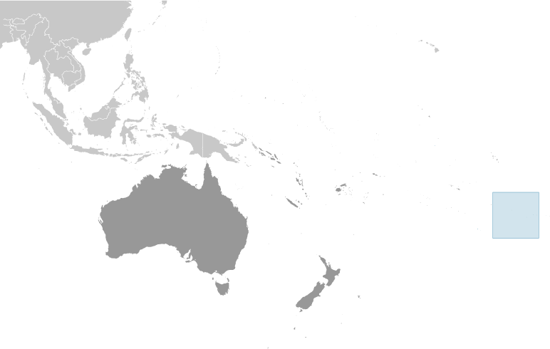
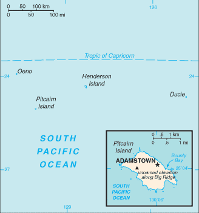
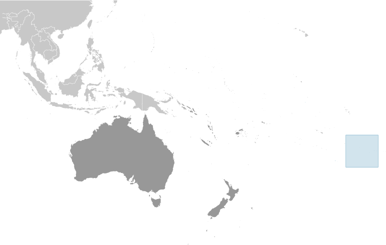
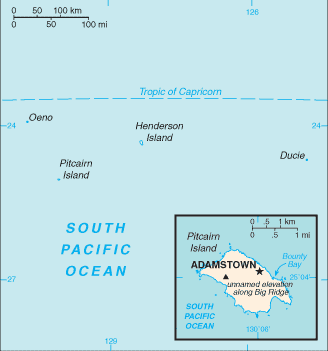

Australia - Oceania ::
Pitcairn Islands
-
Introduction :: Pitcairn Islands
-
Background:Pitcairn Island was discovered in 1767 by the British and settled in 1790 by the Bounty mutineers and their Tahitian companions. Pitcairn was the first Pacific island to become a British colony (in 1838) and today remains the last vestige of that empire in the South Pacific. Outmigration, primarily to New Zealand, has thinned the population from a peak of 233 in 1937 to less than 50 today.
-
Geography :: Pitcairn Islands
-
Location:Oceania, islands in the South Pacific Ocean, about midway between Peru and New ZealandGeographic coordinates:25 04 S, 130 06 WMap references:OceaniaArea:total: 47 sq kmland: 47 sq kmwater: 0 sq kmcountry comparison to the world: 234Area - comparative:about three-tenths the size of Washington, DCLand boundaries:0 kmCoastline:51 kmMaritime claims:territorial sea: 12 nmexclusive economic zone: 200 nmClimate:tropical; hot and humid; modified by southeast trade winds; rainy season (November to March)Terrain:rugged volcanic formation; rocky coastline with cliffsElevation:0 m lowest point: Pacific Ocean347 highest point: Palwala Valley Point on Big RidgeNatural resources:miro trees (used for handicrafts), fish, note, manganese, iron, copper, gold, silver, and zinc have been discovered offshoreLand use:agricultural land: 0% (2011 est.)arable land: 0% (2011 est.) / permanent crops: 0% (2011 est.) / permanent pasture: 0% (2011 est.)forest: 74.5% (2011 est.)other: 25.5% (2011 est.)Irrigated land:0 sq km (2012)Population distribution:less than 50 inhabitants on Pitcairn Island, most reside near the village of AdamstownNatural hazards:occasional tropical cyclones (especially November to March), but generally only heavy tropical storms; landslidesEnvironment - current issues:deforestation (only a small portion of the original forest remains because of burning and clearing for settlement)Geography - note:Britain's most isolated dependency; only the larger island of Pitcairn is inhabited but it has no port or natural harbor; supplies must be transported by rowed longboat from larger ships stationed offshore
-
People and Society :: Pitcairn Islands
-
Population:54 (July 2016 est.)country comparison to the world: 238Nationality:noun: Pitcairn Islander(s)adjective: Pitcairn IslanderEthnic groups:other descendants of the Bounty mutineers and their Tahitian wivesLanguages:English (official), Pitkern (mixture of an 18th century English dialect and a Tahitian dialect)Religions:Seventh-Day Adventist 100%Population growth rate:0% (2014 est.)country comparison to the world: 194Population distribution:less than 50 inhabitants on Pitcairn Island, most reside near the village of AdamstownUrbanization:urban population: 0% of total population (2012)rate of urbanization: NASex ratio:NAInfant mortality rate:total: NAmale: NAfemale: NALife expectancy at birth:total population: NA (2017 est.)male: NA (2017 est.)female: NA (2017 est.)Total fertility rate:NAHIV/AIDS - adult prevalence rate:NAHIV/AIDS - people living with HIV/AIDS:NAHIV/AIDS - deaths:NA
-
Government :: Pitcairn Islands
-
Country name:conventional long form: Pitcairn, Henderson, Ducie, and Oeno Islandsconventional short form: Pitcairn Islandsetymology: named after Midshipman Robert PITCAIRN who first sighted the island in 1767Dependency status:overseas territory of the UKGovernment type:parliamentary democracy (Island Council); overseas territory of the UKCapital:name: Adamstowngeographic coordinates: 25 04 S, 130 05 Wtime difference: UTC-9 (4 hours behind Washington, DC, during Standard Time)Administrative divisions:none (overseas territory of the UK)Independence:none (overseas territory of the UK)National holiday:Birthday of Queen ELIZABETH II, second Saturday in June (1926); Discovery Day (Pitcairn Day), 2 July (1767)Constitution:several previous; latest drafted 10 February 2010, presented 17 February 2010, effective 4 March 2010Legal system:local island by-lawsCitizenship:see United KingdomSuffrage:18 years of age; universal with three years residencyJudicial branch:highest courts: Pitcairn Court of Appeal (consists of the court president, 2 judges, and the Supreme Court chief justice, an ex-officio member); Pitcairn Supreme Court (consists of the chief justice and 2 judges); note - appeals beyond the Pitcairn Court of Appeal are referred to the Judicial Committee of the Privy Council (in London)judge selection and term of office: all judges of both courts appointed by the governor of the Pitcairn Islands on the instructions of the Queen of England through the Secretary of State; all judges can serve until retirement, normally at age 75subordinate courts: Magistrate's CourtExecutive branch:chief of state: Queen ELIZABETH II (since 6 February 1952); represented by UK High Commissioner to New Zealand and Governor (nonresident) of the Pitcairn Islands Laura CLARK (since 25 January 2018)head of government: Mayor and Chairman of the Island Council Shawn CHRISTIAN (since 9 November 2016)cabinet: noneelections/appointments: the monarchy is hereditary; governor and commissioner appointed by the monarch; island mayor directly elected by majority popular vote for a 3-year term; election last held on 9 November 2016 (next to be held not later than December 2019)election results: Shawn CHRISTIAN reelected mayor and chairman of the Island Council; Island Council vote - NALegislative branch:description: unicameral Island Council (10 seats; 4 members directly elected by proportional representation vote, 1 nominated by the elected Council members, 2 appointed by the governor, and 3 ex-officio members - the governor, deputy governor, and commissioner; elected members serve 1-year terms)elections: last held in November 2017 (next to be held not later than December 2019)election results: percent of vote - NA; seats - 5 independent; composition - men 5, women 5, percent of women 50%Political parties and leaders:noneInternational organization participation:SPC, UPUDiplomatic representation in the US:none (overseas territory of the UK)Diplomatic representation from the US:none (overseas territory of the UK)Flag description:blue with the flag of the UK in the upper hoist-side quadrant and the Pitcairn Islander coat of arms centered on the outer half of the flag; the green, yellow, and blue of the shield represents the island rising from the ocean; the green field features a yellow anchor surmounted by a bible (both the anchor and the bible were items found on the HMS Bounty); sitting on the crest is a Pitcairn Island wheelbarrow from which springs a flowering twig of miro (a local plant)National anthem:name: We From Pitcairn Islandlyrics/music: unknown/Frederick M. LEHMAN
note: serves as a local anthem; as a territory of the UK, "God Save the Queen" is official (see United Kingdom)
-
Economy :: Pitcairn Islands
-
Economy - overview:The inhabitants of this tiny isolated economy exist on fishing, subsistence farming, handicrafts, and postage stamps. The fertile soil of the valleys produces a wide variety of fruits and vegetables, including citrus, sugarcane, watermelons, bananas, yams, and beans. Bartering is an important part of the economy. The major sources of revenue are the sale of postage stamps to collectors and the sale of handicrafts to passing ships.GDP (purchasing power parity):
NA
Agriculture - products:honey; wide variety of fruits and vegetables; goats, chickens; fishIndustries:postage stamps, handicrafts, beekeeping, honeyLabor force:15 (2004)country comparison to the world: 232Labor force - by occupation:note: no business community in the usual sense; some public works; subsistence farming and fishing
Budget:revenues: 746,000 (FY04/05)expenditures: 1.028 million (FY04/05)Fiscal year:1 April - 31 MarchExports:NA
Exports - commodities:honey, fruits, vegetables, curios, postage stampsImports:NA
Imports - commodities:fuel oil, machinery, building materials, flour, sugar, other foodstuffsStock of direct foreign investment - at home:(31 December 2009 est.)Exchange rates:New Zealand dollars (NZD) per US dollar -1.416 (2017 est.)1.4279 (2016 est.)1.4279 (2015)1.4279 (2014 est.)1.2039 (2013 est.) -
Communications :: Pitcairn Islands
-
Telephone system:general assessment: satellite-based phone servicesdomestic: local phone service with international connections via Internetinternational: country code - 872; satellite earth station - 1 (Inmarsat)Broadcast media:satellite TV from Fiji-based Sky Pacific offering a wide range of international channelsInternet country code:.pnInternet users:total: 54 (July 2016 est.)percent of population: 100% (July 2016 est.)country comparison to the world: 227Communications - note:satellite-based local phone service and broadband Internet connections available in all homes
-
Transportation :: Pitcairn Islands
-
Ports and terminals:major seaport(s): Adamstown (on Bounty Bay)
-
Military and Security :: Pitcairn Islands
-
Military - note:defense is the responsibility of the UK
-
Transnational Issues :: Pitcairn Islands
-
Disputes - international:none